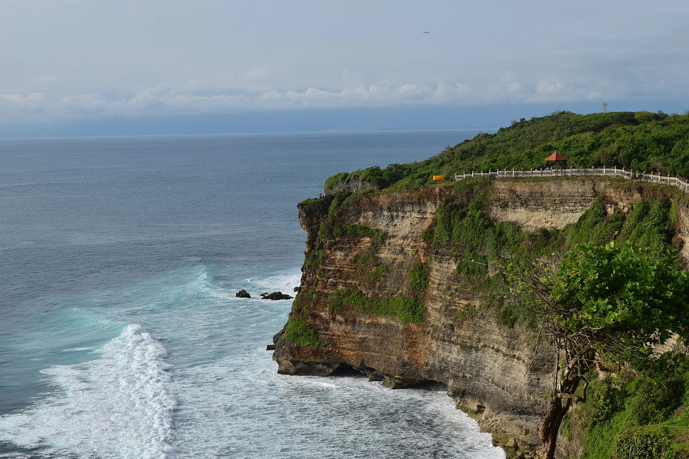

Uluwatu — Bali
Indonésie · surf

La gauche mythique de Bali : des murs et tubes parfaits au pied de falaises couronnées d'un temple hindou.
- Lieu
- Indonésie
- Niveau
- Expert
- Activités
- surf
- Type d'eau
- Mer / océan
- Coordonnées
- -8.81, 115.09 (position approximative du secteur)
Dangers à connaître
- Récif tranchant.
- Sortie par la grotte.
Le conseil d'Ocean Buddy
Entrée et sortie par la grotte selon la marée ; récif peu profond, prudence.
Ouvrir dans Ocean Buddy Télécharger sur l'App Store
Source : Description historique Ocean Buddy · vérification externe en attente.